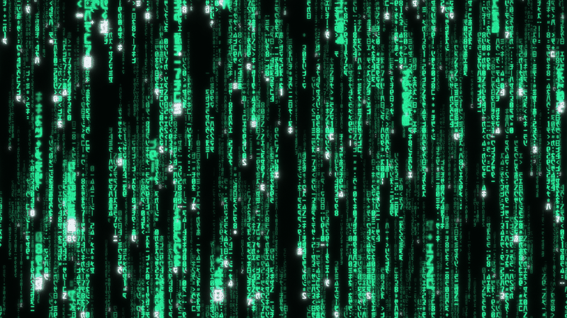
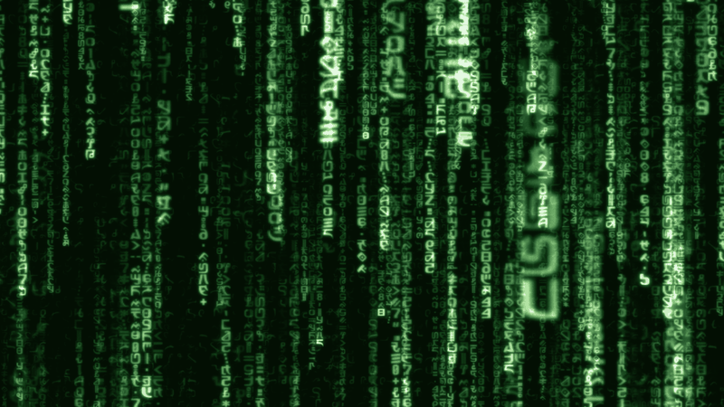
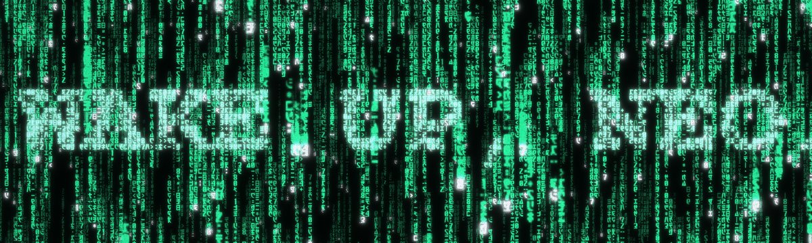
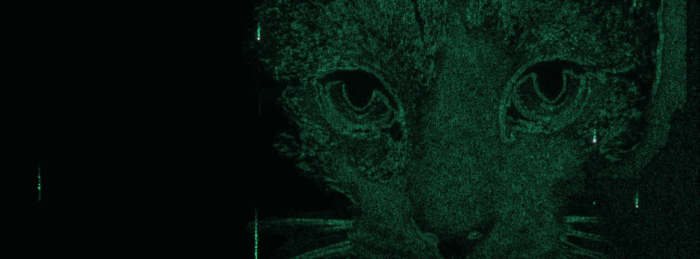

Matrix-inspired
digital rain
Mirrored katakana falls in glowing green columns across every monitor you own, with a bright white head, a fading trail, three layers of depth and the look of an old CRT. An unofficial, Matrix-inspired fan project.
The default look, The Matrix (1999). Every monitor runs its own rain.
What you get
Built with Python and OpenGL.
Multi-monitor and DPI-aware
Every display runs its own rain, fitted to its size, position and scaling. Plug or unplug a screen while it runs.
The film's look
The film's 57 glyphs (mirrored blocky katakana, digits and symbols), a near-white head, a fading green trail and glyphs that mutate.
Three film looks
The Matrix (1999), Reloaded (2003) and Resurrections (2021), measured against film stills, or Custom to tune every effect yourself.
Depth and glow
Three parallax layers (a dim far one, a middle one and a big out-of-focus near one) with bloom.
CRT feel
Scanlines with animated interlacing, a vignette and a subtle flicker.
Wake up, Neo…
Now and then a message from the film types itself out over the rain. The rain can also spell out the time or your own text.
Pictures in the rain
Point it at a folder of pictures and the rain forms them one after another.
Tunable
Runs on the GPU with an automatic software fallback. A settings window with a live preview sets the look per monitor.
The film looks
Each look is measured against stills from its film. Captured from the screensaver itself.

The Matrix (1999)
The default look.

Reloaded (2003)
Brighter, denser mint-green rain.

Resurrections (2021)
The newer glyphs, softer and deeper.

Message in the rain
Your own text or the time, formed out of the rain. Set Message to Your text to see it.

Picture in the rain
A cat portrait formed by the rain (photo: Anton Petrov, CC0).
Download and install
It takes about a minute. No account.
- Download and run
DigitalRain-Setup.exeClick the button above, or grab it from the latest release page (the file is under Assets). It installs for your user only, so it needs no administrator rights.
- Leave Set Digital Rain as my screensaver ticked and click Finish
Windows opens the Screen Saver Settings window with Digital Rain already selected.
- Click Apply and OK
Set how many minutes of inactivity you want in Wait. Use Preview to try it right away; a key press, a click or moving the mouse ends it.
- Optional: click Settings… to tune it
Pick a film look, or Custom with six colours (Film green, Bright green, Amber, Red, Blue, White), then fall speed, rain density, character size, a message or clock, pictures and more. You can also point it at a custom font.
On a Mac
Download DigitalRain.dmg from the same release, open it and double-click Digital Rain.saver. It is not notarised, so if macOS blocks it, open System Settings → Privacy & Security and click Open Anyway, or run xattr -dr com.apple.quarantine "Digital Rain.saver" first. To update, install the saver from a newer dmg the same way, then log out and back in. To remove it, delete it from ~/Library/Screen Savers.
Check your download
Each release has a SHA256SUMS.txt. Compare it with Get-FileHash DigitalRain-Setup.exe (Windows) or shasum -a 256 DigitalRain.dmg (Mac). The files also carry build provenance attestations: gh attestation verify DigitalRain-Setup.exe -R phabzlabs/digital-rain.
Can't find the Screen Saver Settings window?
Press the Windows key and type screen saver, then open Change screen saver. On Windows 11 it is also under Settings → Personalization → Lock screen → Screen saver. Pick Digital Rain from the drop-down list.
Run it from source instead
git clone https://github.com/phabzlabs/digital-rain.git
cd digital-rain
python -m pip install -r requirements/requirements.txt
python matrix_saver.py /sNeeds Python 3.14 on Windows. To build your own DigitalRain-Setup.exe run .\build.ps1 (see the README).
Uninstall
Open Settings → Apps → Installed apps, find Digital Rain and choose Uninstall. If Digital Rain was your screen saver, pick another one (or None) in the screen saver window. Your settings are in %APPDATA%\MatrixRain; delete that folder to reset them.
Updating, checking the download, multiple monitors and troubleshooting are covered in Installing and uninstalling.
Documentation
- FeaturesWhat the screensaver does, and why each part is there.
- Settings referenceEvery setting, the values it takes and its default.
- Installing and uninstallingFull install steps and troubleshooting.
- macOSThe Mac saver: install, build and open points.
All documentation, including the pages for contributors.
Requirements
| System | Windows 10 or 11, or macOS 12 or later. Each release carries DigitalRain.dmg for the Mac. |
|---|---|
| Graphics | Any GPU with OpenGL 3.3 or newer. Without it, a slower software renderer takes over automatically. |
| Fonts | The film font is bundled. If it is missing, the MS Gothic and Courier New fonts that ship with Windows stand in. |